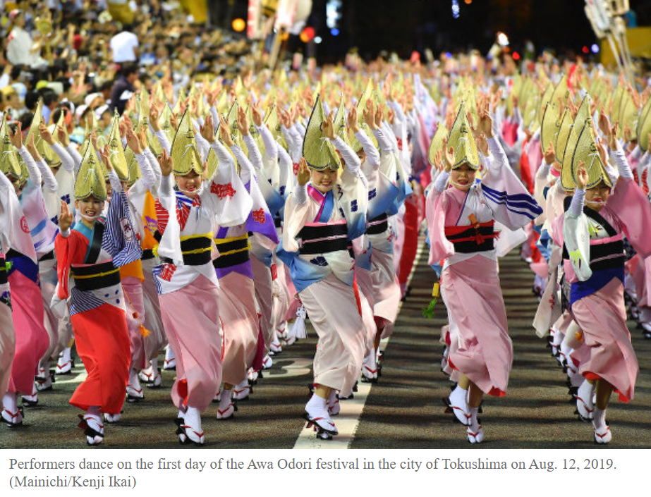

Japan
Awa Odori Dance Festival

Image Source
Description
The Awa Dance Festival, also known as "Awa Odori," is a vibrant and lively traditional dance celebration that takes place annually in Tokushima City, located on the island of Shikoku, Japan. This festival attracts more than one million spectators and typically occurs from August 12th to 15th as part of the larger Obon season, a time when Japanese people honor the spirits of their ancestors.
Awa Odori is one of Japan's most renowned and largest dance festivals, attracting both participants and spectators from across the country and around the world. The festival's origins date back more than 400 years, originating from a celebratory atmosphere when local lords completed the construction of Tokushima Castle.
During the Awa Dance Festival, the streets of Tokushima come alive with captivating performances characterized by rhythmic music, chanting, and intricate dance movements. Participants, dressed in colorful traditional attire called "happi" coats, "yukata" robes, and straw hats, form organized dance troupes known as "ren" and parade through the city in a joyful procession.
The dance itself features a distinctive, repetitive choreography involving graceful steps, unique hand movements, and swaying motions that follow the beat of traditional folk music played on shamisen, flutes, drums, and other instruments. The infectious rhythm and the hypnotic nature of the dance draw in both performers and onlookers, creating an electrifying and immersive experience.
Local food stalls lining the festival route offer a variety of delicious Japanese street foods, allowing attendees to indulge in regional delicacies while enjoying the festive atmosphere. The entire city becomes a stage, with performances taking place on designated platforms as well as impromptu displays in the streets, adding to the vibrant and spontaneous nature of the event.
The Awa Dance Festival embodies a sense of community, cultural pride, and a joyous celebration of tradition. Its lively and exuberant ambiance, coupled with the mesmerizing dance performances and the fusion of history and contemporary revelry, makes it an unforgettable experience for both participants and spectators alike.
Videos